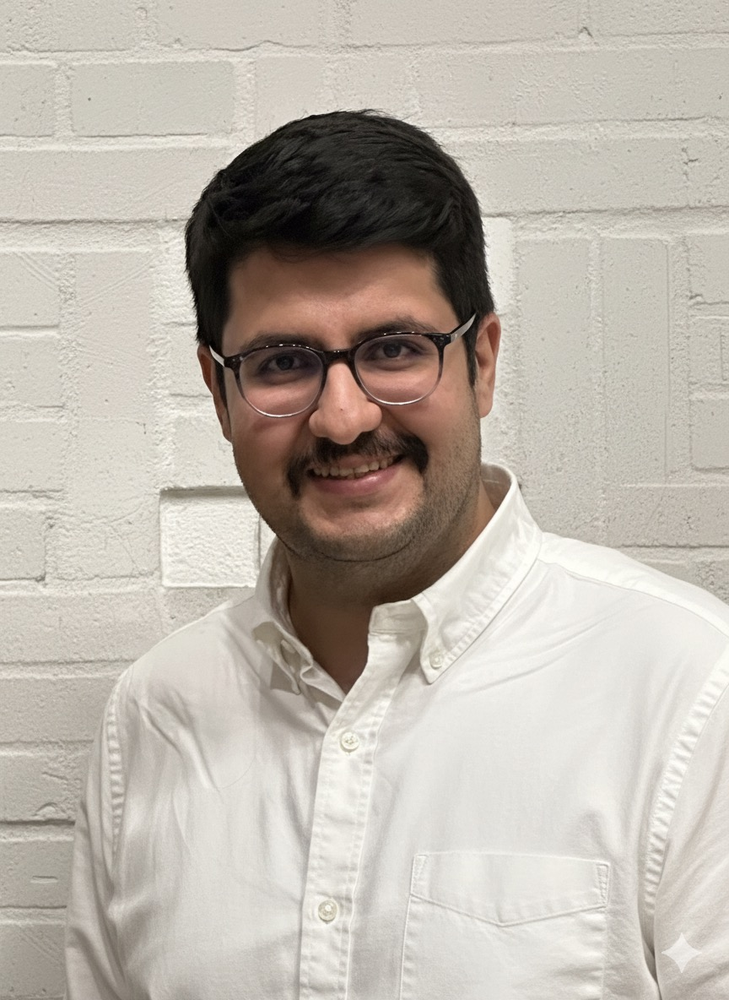

<div class="row flex-column-reverse flex-md-row py-2">
    <div class="col-md-8" id="bio">
        <h1 style="text-align: left">Ali Hojjat</h1>
        <h2 style="display: block; text-align: left; font-size: 1.2rem; color: #666; margin-bottom: 1rem;">ML Researcher | ML Engineer | Data Scientist</h2>
        <hr style="border: 0; height: 1px; background: #eee; margin: 1rem 0;">
        <p style="text-align: left;">
            I am a <strong>Ph.D. candidate at the Technical University of Hamburg (TUHH)</strong>, specializing in <strong>efficient machine learning</strong>. My research focuses on developing <strong>lightweight vision models</strong>, including <strong>Vision Transformers (ViTs)</strong>, <strong>vision-language models (VLMs)</strong>, and <strong>video/image compression techniques optimized for edge devices</strong>. Previously, I worked as a <strong>Data Scientist at <a href="https://divar.ir" target="_blank">DIVAR</a></strong>, Iran's largest classifieds platform with <strong>over 60 million users</strong>, where I built <strong>high-performance ML systems at scale</strong>. My work has been presented at leading conferences such as <strong>NeurIPS (Main Track)</strong>, <strong>ACM MobiSys (Main Track)</strong>, <strong>CVPR (Workshop)</strong>, and <strong>ICML (Workshop)</strong>. I also actively contribute to the research community as a <strong>reviewer for top-tier conferences</strong>, including <strong>ICLR</strong>, <strong>CVPR</strong>, <strong>ICML</strong>, and <strong>NeurIPS</strong>.
        </p>
        <hr style="border: 0; height: 1px; background: #eee; margin: 1rem 0;">
        <p style="text-align: left; font-size: 1rem; color: #000000; margin-bottom: 1rem; margin-top: 1rem;">
            <strong>Expertise:</strong><br>
            • Deep Learning, Computer Vision, Efficient-ML, Edge-AI<br>
            • ViT, VLM, Video/Image Compression
        </p>
        <hr style="border: 0; height: 1px; background: #eee; margin: 1rem 0;">
        <p style="text-align: left; font-size: 1rem; color: #000000; margin-bottom: 1rem; margin-top: 1rem;">
            <strong>Award:</strong><br>
            • Best Paper Honorable Mention Award for the paper <em>“MCUCoder: Adaptive Bitrate Learned Video Compression for IoT Devices”</em>, <strong>GCPR'2025</strong>
        </p>
        <hr style="border: 0; height: 1px; background: #eee; margin: 1rem 0;">
        <p id="news" style="text-align: left; font-size: 1rem; color: #000000; margin-bottom: 1rem; margin-top: 1rem;">
            <strong>News:</strong><br>
            • Feb 2026: ThinkingViT accepted at <strong>CVPR'2026 (Main Track)</strong>.<br>
            • Nov 2025: MCUCoder received the <strong>Best Paper Honorable Mention Award</strong> at <strong>GCPR'2025</strong>.<br>
            • Sep 2025: MCUCoder accepted at <strong>GCPR'2025</strong>.<br>
            • Jul 2025: ThinkingViT accepted at <strong>ICML'2025 ES-FoMo Workshop</strong>.<br>
            • Sep 2024: HydraViT accepted at <strong>NeurIPS'2024 (Main Track)</strong>.<br>
            • Jun 2024: LimitNet accepted at <strong>ACM MobiSys'2024 (Oral)</strong>.<br>
            • May 2023: ProgDTD accepted at <strong>CVPR'2023 NTIRE Workshop</strong>.
        </p>
        <hr style="border: 0; height: 1px; background: #eee; margin: 1rem 0;">
        <p style="text-align:center">
            <a target="_blank" href="https://mailhide.io/e/Yo9ot1oD">Email</a> &nbsp;/&nbsp;
            <a href="https://github.com/alihjt">GitHub</a> &nbsp;/&nbsp;
            <a href="https://scholar.google.com/citations?user=ckq1Py8AAAAJ&hl=en">Google Scholar</a> &nbsp;/&nbsp;
            <a href="https://www.linkedin.com/in/ahojjat/">LinkedIn </a>
        </p>
    </div>
    <div class="col-md-4" style="z-index:4;">
        
    </div>
</div>

{% include publications.html %}
